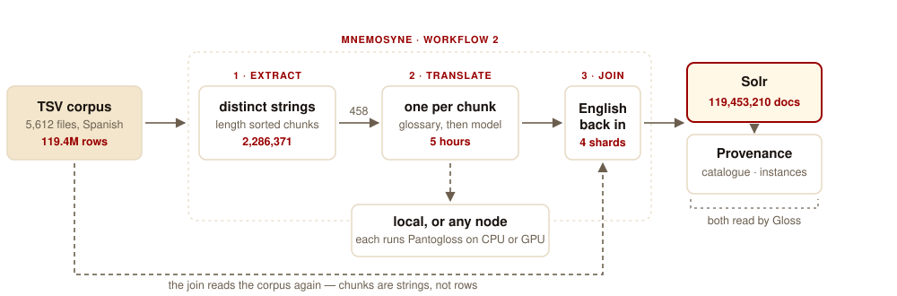
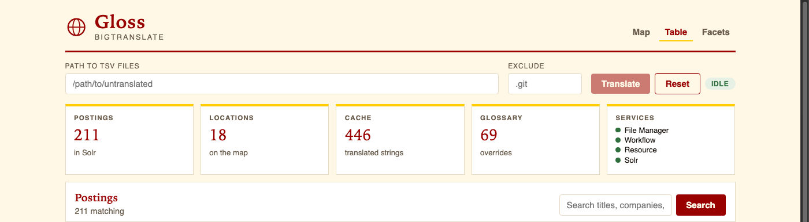
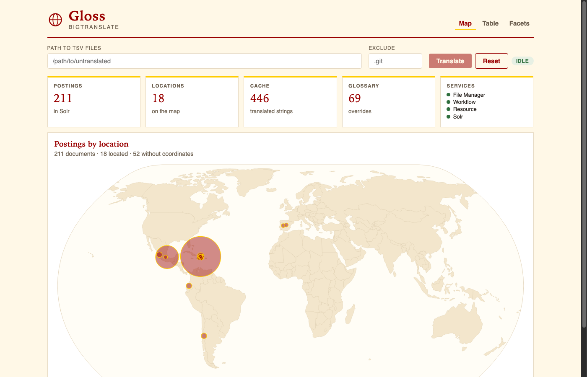
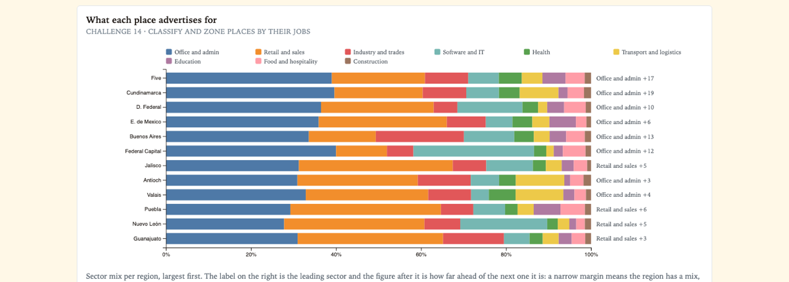
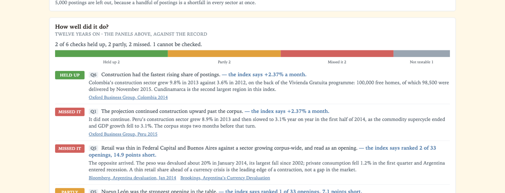

Mnemosyne · Pantogloss · Solr
Translating every cell of a 38GB corpus is 836 million model calls. Translating every distinct string is 2.3 million. BigTranslate deduplicates first, translates once on local Pantogloss, and joins the English back into Solr.
$ bin/bigtranslate translate ~/untranslated
A demo catalog
Nothing here is from a live corpus. The table is what Solr holds after
bigtranslate translate: selected columns in English,
glossary terms stamped, originals still on the record.
| Spanish | English | How |
|---|---|---|
| Tiempo Completo | Full Time | glossary · jobtype |
| Analista de nómina | Payroll analyst | model · title |
| Correo Electrónico | glossary · applications | |
| Inmediato | Immediate | glossary · start |
| Coordinador de almacén | Warehouse coordinator | model · title |
| Desde Casa | Work From Home | glossary · jobtype |
The strings that matter
Pantogloss will render a job title. It will also turn Medio Tiempo into “Half Time” and Correo Electrónico into “default mail” unless you stamp those first. The 69 overrides are not the story of the model. They are why re-runs stay consistent.
One command
bigtranslate, shardedLocal or across a cluster on one setting. What each stage reads and writes · Architecture

The corpus
Country-day files. The crawler picks them up from staging. Exclude .git if you pointed it at a checkout.
Offline
Pantogloss is TensorFlow/Keras on the box. A full XDATA corpus — 119,453,210 documents — ran in about seven hours across an M3 Mac and one RTX 3080 Ti.
OPSUI for the workflow. Gloss for Translate / Reset, the map, the table, and facets. Solr core bigtranslate.
bigtranslate reset --yes wants the services down. Gloss Reset is a live wipe and leaves the services running.
PANTOGLOSS_SOURCE=~/git/pantogloss bin/bigtranslate-setup then oodt restart. The PGEs inherit the workflow manager’s PATH.
Gloss
Gloss is the Vue 3 UI at /gloss/. You paste a directory of TSV files, press Translate, and the map fills as Solr receives postings.
Reset is the other button. The phases stay in bin/bigtranslate.


bin/bigtranslate
$ PANTOGLOSS_SOURCE=~/git/pantogloss bin/bigtranslate-setup $ bin/oodt start $ bin/bigtranslate translate --exclude .git ~/untranslated $ bin/oodt stop $ bin/bigtranslate reset --yes
One verb for the whole corpus, reset before the next tree. oodt start is the Mnemosyne launcher — the name is unchanged on purpose.
Heritage
The corpus is DARPA XDATA employment data, handed out at the 2014 Summer Camp with fourteen challenge questions attached: where job types will appear, how long postings last, how quickly jobs fill, where a new business domain might succeed, how to zone a city by what it advertises for. Ten can be answered from the index alone. Two need datasets that no longer exist — the WDC hyperlink graph, Twitter. Two are limited by what the corpus records.


The descriptive questions hold up. The predictive ones break, and they break in the same place — a straight line through eighteen months cannot see an exogenous shock two months after the data ends, and 2014 had two. That is what a projection is, which is why the panel draws it dashed and prints its R².